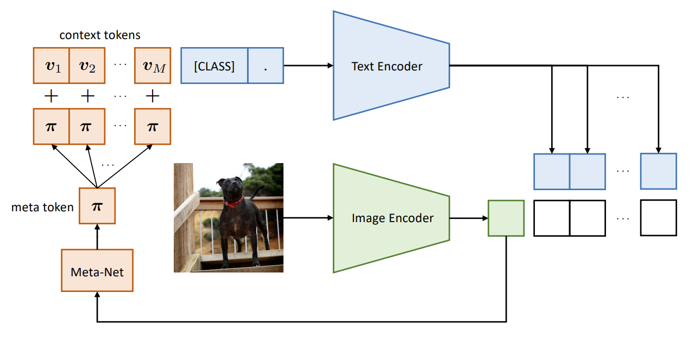

Paper 1: Learning to Prompt for Vision-Language Models
Paper 2: Conditional Prompt Learning for Vision-Language Models
CLIP marked a groundbreaking moment in computer vision by reaffirming the potential of Natural Language Supervision for generalisation in vision tasks. CLIP used the unstructured text captions from the internet to train vision models that are inherently more generalizable. It also showed that contrastive methods can produce robust, transferable features, setting a new paradigm for vision-language integration (multimodal understanding). Building on CLIP's foundation, CoOp (Context Optimization) and its successor CoCoOp (Conditional Context Optimization) address one of the key challenges in adapting such general-purpose models: prompt engineering. These methods intoduce learnable context vectors, eliminating the needof devising sub-optimal prompts by humans. CoOp and CoCoOp allow the model to dynamically optimize prompts tailored to specific tasks, significantly improving performance while preserving generalization capabilities. Both of these methods freeze the weights of CLIP and only optimize the context vectors.
CoOp turns context words in a prompt into a set of learnable vectors and, with only a few labeled images for learning, can achieve huge improvements over intensively-tuned manual prompts. CoOp models a prompt’s context words as learnable vectors, which can be initialized either with random values or pre-trained word embeddings. It offers two distinct implementations to suit tasks of varying complexity:
CoCoOp builds on CoOp by incorporating a lightweight neural network to generate an input-conditional token (vector) for each image. Unlike CoOp’s static prompts, which are tailored to each task or class, CoCoOp’s dynamic prompts adapt to each individual instance, making them less sensitive to class shifts. In CoOp, the learned context overfits the base classes, failing to capture more generalizable elements needed for broader scene recognition. The static context in CoOp is optimized solely for a specific set of training classes. In contrast, CoCoOp conditions the prompt on each input instance (image), avoiding the overfitting issue of static context. A simple approach to implement CoCoOp would involve building M neural networks to generate M context tokens, but this would result in a model significantly larger than CoOp due to the increased number of parameters (M × neural network size). Instead like the M context vectors from CoOp are learnt using a lightweight neural network, Meta-Net, which generates a conditional token for each input. This token is then combined with the context vectors, achieving efficiency while improving the model's adaptability.  CoCoOp architecture has two learnable parameters - first is the context like CoOp, and the other is the Meta-Net, which generates the conditional token for each input image.
This blog is not academic in nature, and the content is taken from a lot of sources. The primary source of information are the CoOp and CoCoOp papers themselves. Apart from them following are some of the sources (non-exhaustive list):